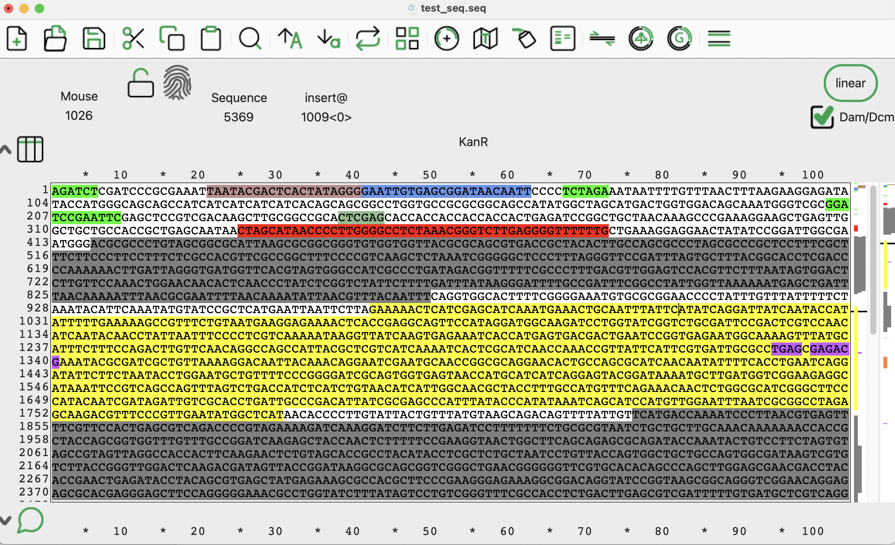

Sequence Tools¶
Introduction¶
Sequence editing tools are essential for molecular biology and bioinformatics, allowing researchers to manipulate and analyze DNA sequences effectively. These tools range from graphical interfaces designed for ease of use to powerful command-line utilities and programming libraries.
Tools Overview¶
| Tool Name | Pros | Cons |
|---|---|---|
| ApE (A Plasmid Editor) | - Course demonstrations will be done in ApE. - Simple interface - Efficient auto-annotation - Supports multiple file formats |
- Lacks cloud collaboration features - Limited automation capabilities. |
| Benchling | - Real-time collaboration - Extensive documentation - Integrates well with other laboratory tools. |
- Requires an internet connection - Subscription required for advanced features. |
| SnapGene | - User-friendly - Excellent visualization tools - Supports automatic primer design and cloning workflows. |
- Paid software with limited free version capabilities. |
| UGENE | - Free - Supports a wide range of sequence analysis tools - Allows scripting. |
- Interface can be complex for beginners. |
| Biopython | - Highly customizable - Integrates well with other computational tools. |
- Requires programming knowledge. |
| EMBOSS | - Wide range of utilities for sequence alignment, translation, and annotation. | - Command-line interface can be intimidating for beginners. |
| Seqtk | - Extremely fast - Suitable for large-scale datasets. |
- Limited functionality compared to larger toolkits. |
| Geneious | - Comprehensive features including primer design, alignment, and phylogenetics. | - Paid software with a high subscription cost. |
Selection Guide¶
- If you prefer a simple graphical tool, start with ApE.
- If you need cloud-based collaboration, choose Benchling.
- If you want advanced visualization and cloning workflows, consider SnapGene.
- If you are comfortable with scripting, use Biopython or EMBOSS.
- If you need high-performance sequence processing, try Seqtk.
This document will focus on ApE, Benchling, and Biopython, providing tutorials on how to get started and perform essential sequence operations.
Ontology of Operations¶
- Search: Finding specific sequences or patterns within a larger sequence. Refer back to the tutorials for practical examples.
- Copy: Duplicating a sequence or a portion of it to the clipboard for further use.
- Paste: Inserting the content of the clipboard into your sequence.
- Reverse Complement: Generating the reverse complement of a DNA sequence.
- Translate: Converting a nucleotide sequence into its corresponding protein sequence using the genetic code.
- Annotate: Adding biological information to a sequence, such as gene names or functional regions.
- Digest: Cutting a DNA sequence at specific sites using restriction enzymes.
- Rotate: Shifting the sequence in a circular manner.
- Feature Management: The process of importing and managing custom features in tools like ApE and Benchling.
ApE¶
Download and Install ApE¶
Download and install ApE from the official website:
ApE Download Page
Update Features and Enzymes in ApE¶
To ensure ApE recognizes the latest feature annotations and enzyme files, follow these steps:
Step 1: Set Up a Storage Folder¶
- Create an empty folder on your computer to store the updated feature list.
Step 2: Configure ApE Settings¶
- Open ApE and navigate to ApE > Settings...
- Click the Files tab.
- Under Default Feature Directory, click Move Directory, select the newly created folder, and click OK.
- Repeat this for Default Enzymes Directory.
- Click OK to close the settings window. ApE will generate default versions of these files in the folder.
Step 3: Download the features¶
- Download the updated files:
Download Default Features
Step 4: Load the Feature Library¶
- In ApE, go to Features > Open Feature Library...
- Navigate to
default_features.txtand select it. - Click OK to finalize.
- Download this test file: Download GenBank
- Open it in ApE and hit ctrl-k. You should see something like:

Figure: Auto-annotation in ApE highlights recognized sequence features in color, providing visual cues for promoters, coding regions, and other functional elements. This aids quick sequence interpretation and editing.
Performing Operations in ApE¶
- Search: Use Edit > Find in the toolbar or press Command + F. To search both strands, check the Also find rev-com of string option. You can use N's as wildcards in your search. Choose to either select or highlight the sequence using the provided button options.
- Copy: Select the sequence using your mouse, then go to Edit > Copy, or press Command + C. To copy the reverse complement, use Edit > Copy Rev Com.
- Paste: Place your cursor where you want to insert the clipboard contents, then go to Edit > Paste, or press Command + V.
- Reverse Complement: Select the sequence and use Edit > Reverse-Complement to modify it directly. Alternatively, use Edit > Copy Rev Com to copy the reverse complement to the clipboard without modifying the original sequence.
- Translate: Use ORFs > Translate... to translate the highlighted sequence. Options allow displaying single-letter amino acids, triplet codes, and including/excluding the original DNA sequence.
- Annotate: Manually add a feature by highlighting a sequence, then go to Features > New Feature to name it and assign a color. Press Command + K to auto-annotate all features in the Feature Library. Add new features under Features > Edit Feature Library....
- Digest: Open Enzyme > Enzyme Selector, select enzymes of interest, and click Highlight to mark their cut sites.
- Rotate: Place your cursor where you want the new origin, then go to Edit > Set Origin. This function is only available when the sequence is marked as circular, indicated by the Linear/Circular toggle button in the editor window.
You can turn off the double-stranded view under ApE > Settings and uncheck the Inline Features option.
Benchling¶
Getting Started with Benchling¶
- Create an account on Benchling and log in.
- Familiarize yourself with the interface and available tools.
Uploading Features and Autoannotation¶
- Navigate to Settings → Feature Libraries.
- Click Upload Feature Library.
- Provide a
.csvfile where column 1 is the feature name and column 2 is the feature sequence. Ensure there are no extra spaces or formatting issues that could cause import errors. - Use
default_features.txtfor your feature file as a reference for formatting. - Save the library and use the Auto-annotate feature on a new sequence to apply the annotations.
Performing Operations in Benchling¶
Search¶
- Open your sequence in Benchling.
- Click on the magnifying glass (🔍) icon in the toolbar or press Ctrl + F (Cmd + F on Mac).
- Type the sequence or pattern you want to find.
- To search both strands, enable the "Search reverse complement" option.
- Matching sequences will be highlighted; click Next or Previous to navigate between results.
Copy¶
- Click and drag to select a sequence region or use the sequence navigator.
- Right-click and select Copy, or press Ctrl + C (Cmd + C on Mac).
- The copied sequence can now be pasted into another sequence, document, or external program.
Reverse Complement¶
- Select the sequence region you want to reverse complement.
- Click More Tools (⚙️) > Reverse Complement in the toolbar.
- The sequence will be transformed in place.
Translate¶
- Highlight the DNA sequence you wish to translate.
- Click More Tools (⚙️) > Translate.
- Select the reading frame (e.g., Frame 1, 2, 3).
- The translated amino acid sequence will appear below the DNA.
Annotate¶
- Highlight a region of your sequence.
- Click Annotate in the toolbar.
- Enter a Feature Name, select a Feature Type, and assign a color.
- Click Save to apply the annotation.
Digest¶
- Click More Tools (⚙️) > Digest.
- Select the Restriction Enzymes you want to use.
- Click Digest to visualize the cut sites on your sequence.
Rotate¶
- Click More Tools (⚙️) > Set Origin.
- Select a new position for the sequence origin.
- Click Apply to shift the sequence.
Biopython¶
Biopython provides programmatic sequence editing capabilities. For practical examples, refer to the Colab notebook: Google Colab Biopython Tutorial. The Colab contains implementations of all described operations in Python.